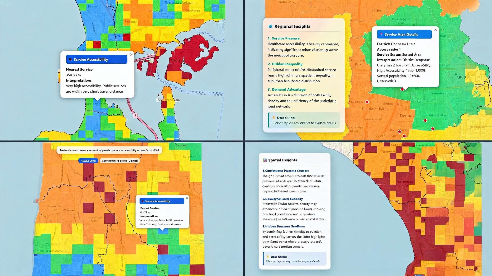
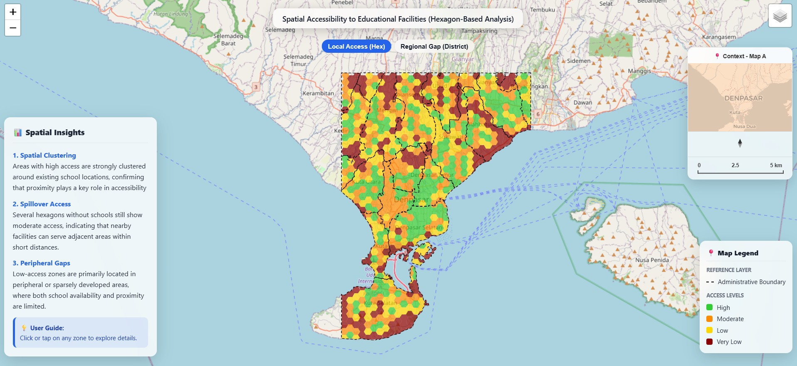
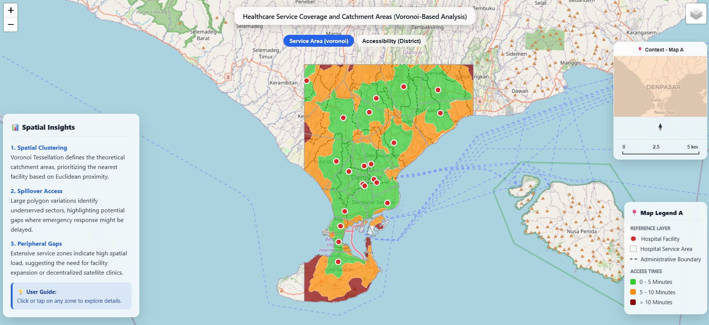
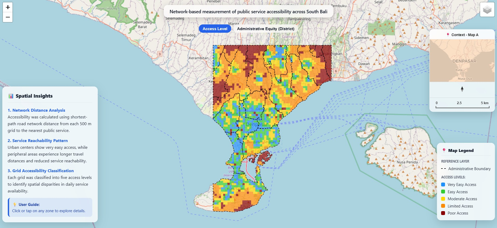
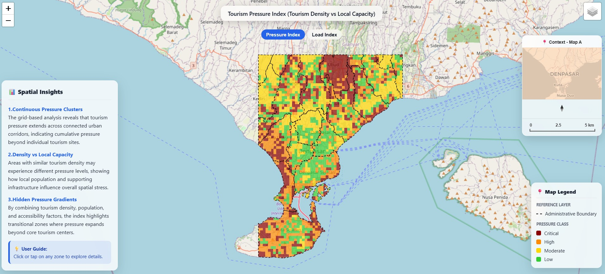

Education Access
Education Infrastructure
Analyze school accessibility, service coverage, and educational equity.
Open ThemeSouth Bali Region
A professional WebGIS platform integrating multi-sector spatial analysis across education, healthcare, accessibility, and tourism pressure to support data-driven territorial insights.

Structured multi-criteria evaluation models for regional analysis.
High-precision dynamic spatial intelligence visualizations.
Enterprise-grade geospatial technology stack and architecture
High-density multisource geospatial datasets.
Select a specialized framework to evaluate regional spatial dynamics.

Analyze school accessibility, service coverage, and educational equity.
Open Theme
Evaluate hospital reachability and healthcare spatial distribution.
Open Theme
Explore network-based accessibility and spatial equity indicators.
Open Theme
Examine tourism density, infrastructure stress, and development pressure.
Open ThemeHigh-performance data cleaning, topology validation, and multi-source layer optimization.
Multi-Criteria Evaluation (MCE), weighted overlay, and network-based proximity modeling.
Strategic intelligence reporting, regional accessibility assessment, and policy-ready insights.